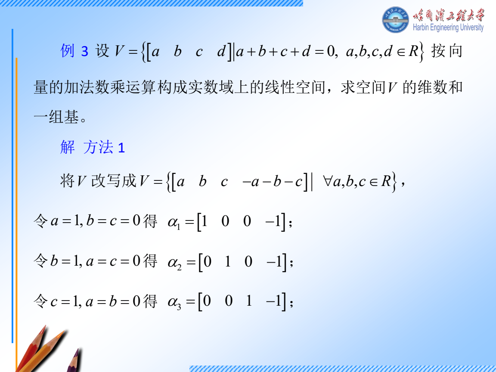
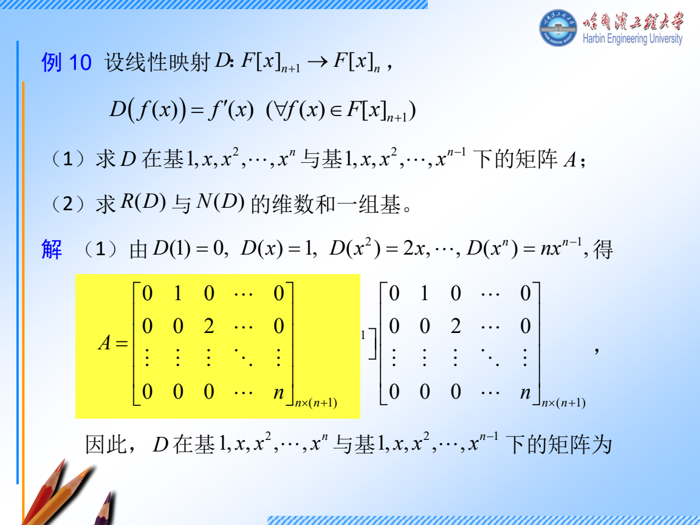
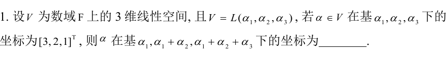
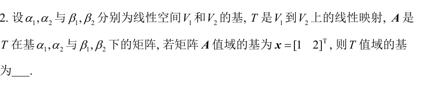
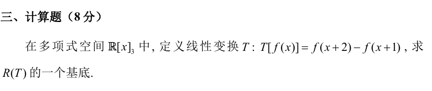

周二 11 月 10 日｜从消元走到第一条若当链
今天 130 分钟。 消元和基 35 分钟，坐标和映射 30 分钟，特征向量与第一条链 40 分钟，独立练习和验收 25 分钟。只剩 90 分钟时，做跟做 1、3 和真题 T1、T2，最后口述映射矩阵怎么按列排。今天优先解决明天做综合题必须用的动作。
讲义与跟做
跟做 1 消元以后怎样写出一组基
给 B=[122412]，求 kerB、imB 的一组基。
- 先分清问的对象。 kerB={x:Bx=0}，它在输入空间 R3。imB={Bx:x∈R3}，它在输出空间 R2。因此前者的基向量有三个分量，后者只有两个。
- 消掉重复方程。 第二行减第一行的两倍，系数矩阵变成 [102010]。第一列有主元，所以第一变量由方程决定。第二、三变量可任取。
- 把自由变量分开。 令 x2=s,x3=t，则 x1=−2s−t。所以
x=−2s−tst=s−210+t−101.
这两个向量的第二、三分量分别是 (1,0)、(0,1)，故线性无关。全体解也都由它们生成，所以它们是一组基。基的向量个数就是维数。
- 回原阵找像空间。 Bx=x1b1+x2b2+x3b3，因此像由原列向量张成。第一列是主元列，回原阵取 b1=(1,2)T。后两列分别是它的两倍和一倍。
- 核对。 两个核向量逐一代回 Bx=0。秩是 1，零度是 2，和是输入维数 3。行变换保留方程的解，找像的基时取原阵相应的列。

跟做 2 为什么表示矩阵的第 j 列是第 j 个基向量的像
输入、输出都用 β=(1+x,x)，映射 T(f)=f′。先求表示矩阵，再求 T(2+x) 在这组基下的坐标。
- 求输入基的像。T(1+x)=1, T(x)=1。
- 两个像都必须写成输出基的线性组合。因为 1=(1+x)−x，两列坐标都是 (1,−1)T，所以 M=[1−11−1]。
- 输入也要用相同的坐标约定。2+x=2(1+x)−x，输入坐标是 (2,−1)T。相乘得 M(2,−1)T=(1,−1)T。
- 把结果还原成多项式得 1+x−x=1，和直接求导一致。矩阵的两列说明分别喂进去第一、第二个基向量时会得到什么。输入一般向量时，线性性保证可以按输入坐标加权。
换基写法。 如果 P 的第 j 列是新基向量在旧基中的坐标，先写 [v]旧=P[v]新。这是一条由「按系数拼向量」得到的等式。对同一空间的映射，新基矩阵是 P−1AP。输入和输出分别用 P,Q 换基时得到 Q−1AP。

跟做 3 从一个特征向量补出第二列
给 A=[2302]，求特征向量，再找 T,J 使 AT=TJ。
- 读重数。 三角阵的特征多项式是 det(tI−A)=(t−2)2。这表示特征值 2 占两维，接着还要看能找出几个独立特征向量。
- 解齐次方程。 N=A−2I=[0300]。令 v=(v1,v2)T，Nv=0 的第二行是 3v1=0，第一行恒为零。故 v1=0,v2 自由，取 v=(0,1)T。只有一维特征空间。
- 给同一条链补第二个方向。 要求 Nw=v。令 w=(w1,w2)T，第二行给 3w1=1，第一行给 0=0，故 w1=1/3，取 w2=0。
- 按链的顺序排。 Av=2v, Aw=v+2w。所以 T=[v,w]=[011/30]，在这组基里 J 的第一列是 (2,0)T，第二列是 (1,2)T。因此 J=[2012]。
- 验算。 detT=−1/3=0。AT 的两列刚好是 2v 和 v+2w，与 TJ 逐列相等。
小题条件表
- 同一数域、同一运算下，验证子空间要有零向量，并对加法和数乘封闭。比如所有可逆矩阵缺零矩阵，直接排除。判断集合是数域则另查乘法和非零元素的逆。
- 和空间的基从两组生成元合起来消元。交空间让两个参数式相等，再还原公共向量。两个子空间直和当且仅当交为 {0}。例如 R2 中两个坐标轴直和，xe1+ye2 的两部分分别由 x,y 唯一确定。
- W 对 T 不变是指 T(W)⊆W。验一组基的像即可，因为其余向量的像是这些像的线性组合。对上面的 A，W=span(e2) 不变，因为 Ae2=2e2。
复数小补充。 先会把 a+bi 的虚部变号，得到共轭 a−bi，再会取模 a2+b2。例如 2+i=2−i, ∣2+i∣=5。AH 表示对矩阵每个元素取共轭再转置。周四复二次型补讲 · 周五复矩阵范数
独立练习
T1 2024 青岛 II.1 换基，限时 5 分钟

看分步答案
- 三个新基向量依次写在旧基下，列矩阵是 P=100110111。
- 设所求坐标为 y。用旧基坐标还原同一个向量，Py=(3,2,1)T。
- 从下往上，y3=1, y2=2−1=1, y1=3−1−1=1。所以答案是 (1,1,1)T。
- 把三个新基各取一份相加，得到 3α1+2α2+α3，和旧坐标一致。
T2 2024 哈尔滨 II.2 核像与坐标，限时 4 分钟

看分步答案
- A 的像空间是坐标空间，所以题面给的 (1,2)T 表示在输出基 (β1,β2) 中的两个系数。
- 按输出基还原，得到 v=β1+2β2。
- 坐标对应是一一对应的线性映射，因此一维像空间的基还原后仍是一组基。答案写为 {β1+2β2}。
T3 2025 哈尔滨 III 求多项式映射的值域，限时 10 分钟

看分步答案
- 取输入基 1,x,x2。常数的像是 1−1=0。
- 一次项的像是 (x+2)−(x+1)=1。
- 二次项的像是 (x2+4x+4)−(x2+2x+1)=2x+3。
- 1 和 2x+3 线性无关，因为第二个有非零 x 项。所有像都由它们张成，故 {1,2x+3} 是值域的一组基，{1,x} 也可以。
T4 换一组数字接链，限时 6 分钟
把跟做 3 的 A 改成 [40−24]。求一组 v,w,T,J。
看分步答案
- N=A−4I=[00−20]。解 Nv=0 得 v2=0，取 v=e1。
- Nw=v 给出 −2w2=1。取 w1=0，得 w=(0,−1/2)T。
- T=diag(1,−1/2)，J=[4014]。验证 Aw=v+4w，即可确认第二列的符号。
当天验收
闭卷写下「主元列回原阵」「新基列乘新坐标等于旧坐标」「Nv=0,Nw=v」。每句配一个今晚算出来的例子。基础仍卡住时，明天开始的前 15 分钟只重做跟做 1 和跟做 3 的第 2、3 步。